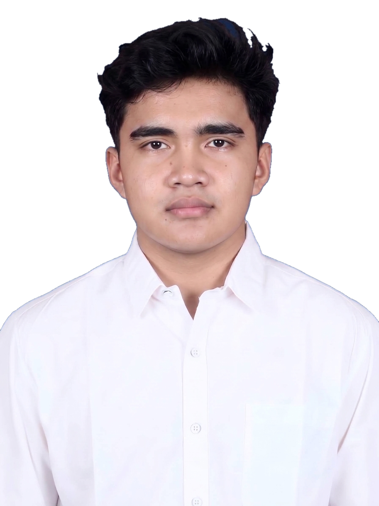

Halo! Saya Akmal.
Nama lengkap saya Fatih Akmal Alqathani, saya adalah mahasiswa Program Studi Teknologi Rekayasa Informatika Industri di Politeknik Manufaktur Bandung dengan minat mendalam pada programing, otomasi, robotika, dan analisis data.
Fokus utama eksplorasi saya mencakup integrasi sistem perangkat keras (hardware prototyping), pemrograman logika kontrol (PLC), serta pengelolaan data terstruktur. Website ini merupakan halaman yang merangkum perjalanan akademik dan nonakademik.